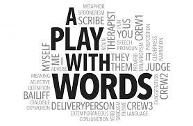

hello I am the
the person
Of all the Green Lantern’s none are as fitti15ng for this list as Hal Jordan. the inth Hal Jordan is the Green Lantern when Green Lantern’s come up for discussion . He is fearless, capable, and willing to do whatever it takes for the good guys to win.
